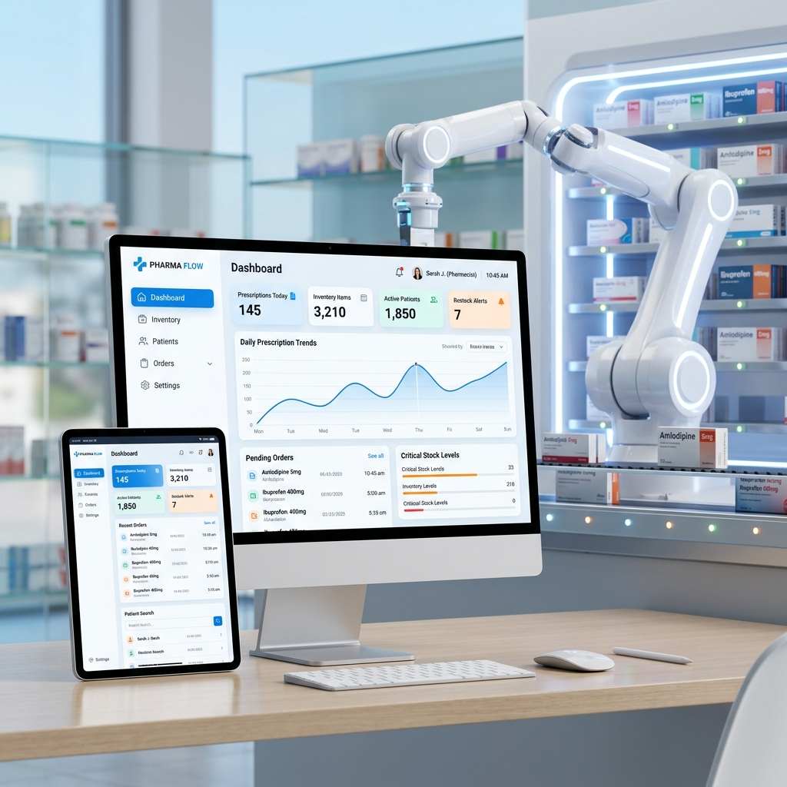
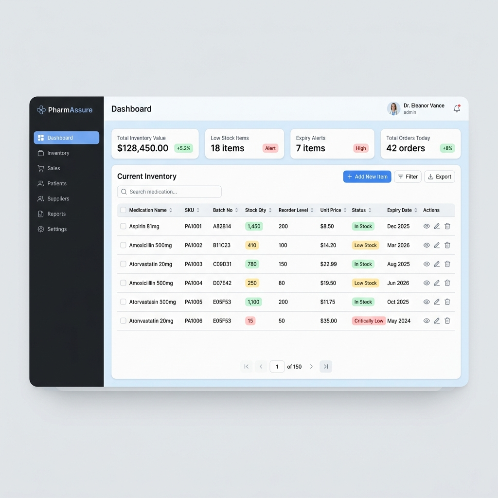
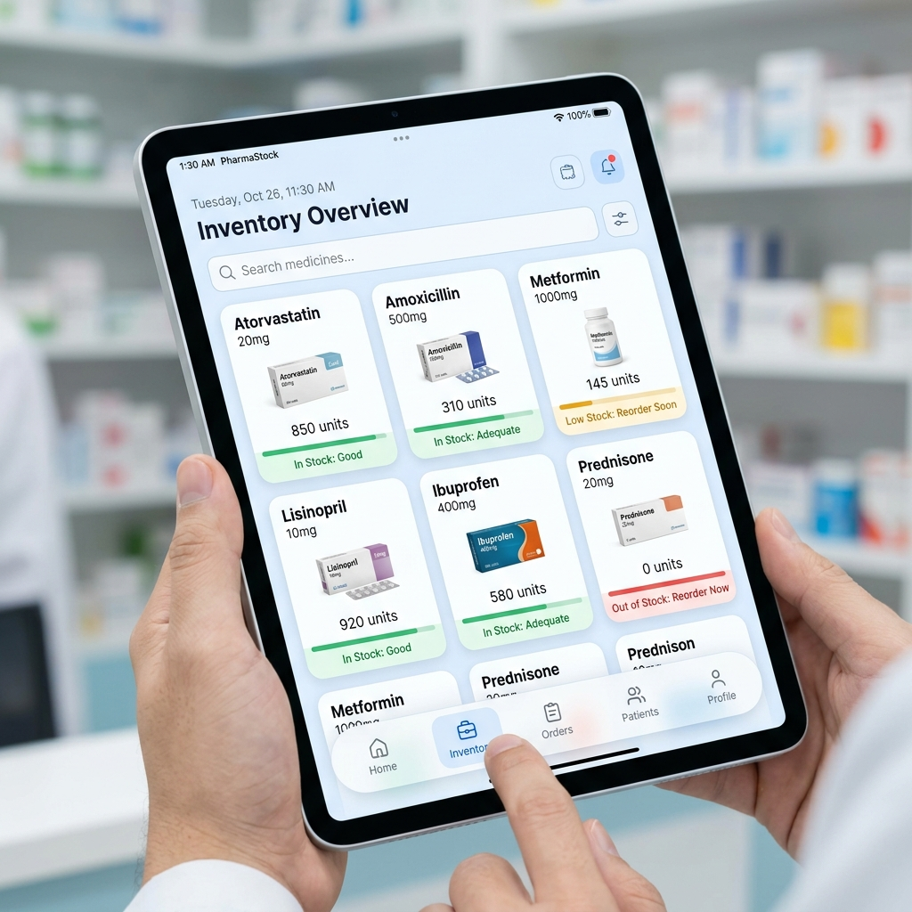

Advanced Pharmacy Management System integrating AI, WebSockets, and Robotic Dispensing

The Advanced Pharmacy Management System (APMS) is an intelligent ecosystem designed to bridge the gap between rigid traditional pharmacy software and modern healthcare needs. It manages inventory securely, predicts future stock demands through AI, and dispenses medication physically via robotics.
This case study details the technical implementation of the APMS ecosystem, comprising a staff dashboard, a secure Node.js gateway, an AI predictive engine, and the direct hardware integration controlling the robotic dispensing arm.
The system relies on a modular, decentralized microservices architecture:
pay_rate_at_sale)similarity()) for OCR data linkingWhen stock arrives, invoices are often kept in a PENDING state. The critical logic ensures physical stock quantities in the medicines_inventory do not increase until the invoice status flips to PAID. This prevents "phantom" inventory that could jam the automated hardware if a digitally present medicine is physically missing.
When a prescription is checked out, the system copies the current prices from the inventory table and locks them into the sales row. If medicine prices inflate next month, historical profit margins for today remain mathematically accurate.
For shift auditing, the backend calculates expected cash but employs a Blind Reconciliation—staff input their actual till amount without knowing the expectation. An Autoencoder model then detects patterns of anomalies, alerting managers to potential human error or fraud.
The AI Microservice transforms the pharmacy from a static management tool into an intelligent healthcare hub.
| Model | Technology | Business Impact |
|---|---|---|
| Demand Forecasting | XGBoost Regressor | Analyzes historical sales to handle non-linear seasonal patterns in medicine demands, allowing high-precision procurement. |
| Smart Reorder | Q-Learning | Balances the cost of overstocking against the risk of life-saving medicine running out based on sales volatility and standard deviations. |
| Integrity Audit | Autoencoder (Keras) | Reconstructs shift data; if reconstruction error (MSE) is too high, flags shifts for anomalies standard accounting might miss. |
| Expiry Clearance | Heuristic Engine | Calculates dynamic discount percentages (20%-50%) for expiring items to liquidate risky stock and recover capital. |
The physical robotic arm is the operational core of APMS. We established a strict, low-latency communication contract using WebSockets.
DISPATCHED JSON event to the hardware's WebSocket listener.A-01-C). Firmware maps this to X/Y/Z stepper motor steps./complete POST route, triggering inventory deduction and a COMPLETED broadcast to turn the pharmacist's iPad UI green.ABORTED status is broadcast, triggering the microcontroller's Interrupt Service Routine to instantly cut power to stepper drivers and return home.Pharmacists work in high-stress, fast-paced environments. The APMS dashboard is designed using core HCI principles to reduce cognitive load.
Instead of showing raw expiration dates, the app uses StockStatus enums (Healthy, Warning, Critical) with color-coded badges, allowing pharmacists to scan a list of 500 items and identify risks in milliseconds.
On desktop, the UI features a fixed sidebar. On mobile/tablets (often carried by pharmacists between shelves), it shifts to a bottom NavigationBar for optimal one-handed operation.

Desktop Dashboard

Tablet Interface